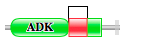
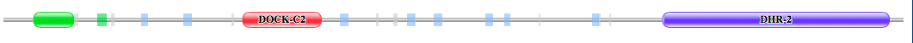
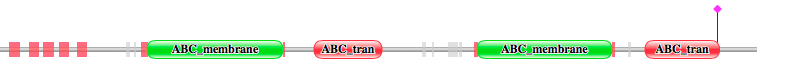
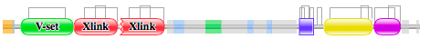

3. Les protéines impliquées dans la fusion :
--> 1ère fusion : entre les gènes AK3 et DOCK8 :
Cette fusion implique 2 protéines solubles dont une avec une activité kinase.
Protéine codée par AK3 :
- Fonction :
Le gène AK3 code pour une protéine GTP /ATP phosphotransférase appelée Adénylate Kinase 3, elle est soluble dans la matrice de la mitochondrie. Il est impliqué dans le maintien de l’homéostasie des nucléotides cellulaires en catalysant l’interconversion des nucléosides phosphates. Elle participe également la réponse au métabolisme plaquettaire élevé de Ca2 + cytosolique et Pyrimidine.
http://www.uniprot.org/uniprot/Q9UIJ7
- Séquence (format FASTA) : http://www.uniprot.org/uniprot/Q9UIJ7.fasta
Cette protéine est composée de 227 acides aminés.
- Domaines Pfam de la protéine AK3_Human – Q9UIJ7 : http://pfam.xfam.org/protein/Q9UIJ7

Il existe 2 domaines Pfam pour la protéine codée par 1K3 : le domaine ADK et le domaine ADK lid.
Protéine codée par DOCK8 :
- Fonction :
Le gène DOCK8 code pour une protéine soluble de la famille DOCK180, c’est-à-dire des facteurs d’échange du nucléotide guanine. Ceux-ci interagissent avec les GTPases Rho et constituent en partie des réseaux de signalisation intracellulaire. Il est également impliqué dans la réponse à Ca2 + cytosolique plaquettaire élevée et dans le développement des mégacaryocytes et la production de plaquettes. Des mutations dans ce gène peuvent conduire à la forme autosomique récessive du syndrome hyper-IgE. De plus il permet une régulation négative du processus apoptotique des cellules T. Il a donc un rôle dans l’immunité.
http://www.uniprot.org/uniprot/Q8NF50
- Séquence (format FASTA) : http://www.uniprot.org/uniprot/Q8NF50.fasta
La protéine est composée de 2099 acides aminés.
- Domaines Pfam de la protéine DOCK8_Human – Q8NF50 : http://pfam.xfam.org/protein/Q8NF50

Il existe 3 domaines Pfam :DUF3398, DOCK-C2 et DHR-2.
--> 2ème fusion : entres les gènes ABCC3 et BCAN:
Cette fusion implique une protéine transmembranaire codée par ABCC3.
Protéine codée par ABCC3 :
- Fonction :
La protéine codée par ce gène appartient à la superfamille des transporteurs de la cassette de liaison à l'ATP, autrement dit à la superfamille des transporteurs ABC. Les protéines ABC transportent diverses molécules à travers les membranes extracellulaires et intracellulaires. Cette protéine transmembranaire est un membre de la sous-famille MRP qui est impliquée dans la multirésistance. La fonction spécifique de cette protéine n'a pas encore été déterminée; Cependant, cette protéine peut jouer un rôle dans le transport de l'excrétion biliaire et intestinale des anions organiques. Il est donc impliqué dans l'activité de transporteur et dans l'activité ATPase, couplées au mouvement transmembranaire des substances.
http://www.uniprot.org/uniprot/O15438
https://www.proteinatlas.org/ENSG00000108846-ABCC3/tissue
- Séquence (format FASTA) : http://www.uniprot.org/uniprot/O15438.fasta
La protéine est composée de 1527 acides aminés.
- Domaine Pfam de la protéine ABCC_Human_O15438 :http://pfam.xfam.org/protein/O15438

Il existe 4 domaines Pfam : 2 ABC-membranaire, et 2 ABC tran,
Protéine codée par BCAN :
- Fonction :
Ce gène code pour un membre de la famille lecténique des protéoglycanes sulfate de chondroïtine qui est spécifiquement exprimé dans le système nerveux central. Cette protéine est fortement exprimée dans les gliomes et peut favoriser la croissance et la motilité cellulaire des cellules tumorales du cerveau. Ce gène est impliqué dans le métabolisme du glycosaminoglycane et le métabolisme du sulfate de chondroïtine / sulfate de dermatane. Il a un rôle la liaison aux hydrates de carbone et la liaison à l'acide hyaluronique. Il peut jouer un rôle dans la différenciation terminale et le système nerveux adulte au cours du développement postnatal. Il pourrait stabiliser les interactions entre l'hyaluronane (HA) et les protéoglycanes du cerveau.
http://www.uniprot.org/uniprot/Q96GW7
- Séquence (format FASTA) : http://www.uniprot.org/uniprot/Q96GW7.fasta
La protéine est composée de 911 acides aminés.
- Domaine Pfam de la protéine BCAN_Human_Q96GW7 :http://pfam.xfam.org/protein/Q96GW7

La protéine est composée de 6 domaines Pfam : V-set, 2 Xlink, EGF, Lectin C et Sushi.